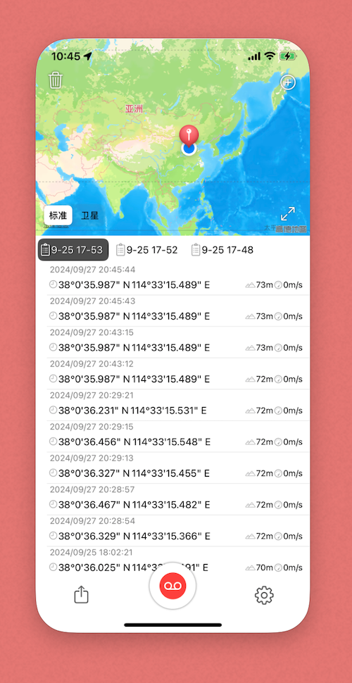

GPS记录仪

功能介绍
本应用是专门为辅助摄影所设计

你可以通过它来记录拍摄照片的位置，后续可以这些导出位置记录。
You can use it to record the location where you took the photo, and then export these location records later.
使用我们的另外一个App“Exif GPS编辑器”拍摄位置添加到照片文件中。
Use our other app “Exif GPS Editor” to add the shooting location to the photo file.
支持创建多个分组，可以用来区分不同的拍摄任务。
Supports creating multiple groups, which can be used to distinguish different shooting tasks.
设置定位间隔，用于不同频率的拍摄任务。
Set the positioning interval for shooting tasks with different frequencies.